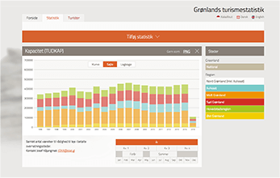

stats & charts
DASHBOARD
Pick data series:
Dataset
Create your own data-feed at Statistics Greenlands Statbank and paste the url in the form below.
THE DATA
The dataset should be of the JSON-stat format and have 3 dimensions:
- Time. This should be the first dimension. This dimension will become the horizontal axis on the bar and line charts.
- Category. The second dimension is used to group the data in different data series. This dimension will be the vertical axis of the charts.
- Category (summed). The third dimension may include categorical data, which will allow a third filtering option in the pie chart. In the column and line chart the data is summed to one value.
Or check out one of our demo-datasets:
Population by time, age and residencePopulation by time, gender and residence
Cases and testimonials
Our data has been used by...
GREENLAND TOURISM STAT
Our statistics API provides data for Visit Greenlands tourismstat-website.
http://tourismstat.gl
